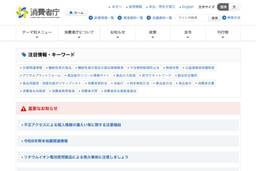
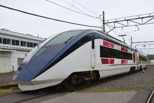
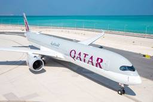
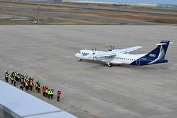
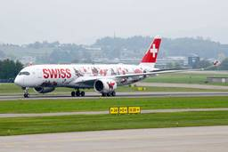
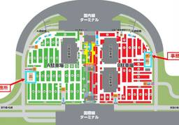

TRAICY（トライシー）
https://www.traicy.com/
TRAICY（トライシー）は、航空・LCC・鉄道・ホテル・ゲストハウス・バックパッカーズの最新情報を発信している、日本最大級のトラベルメディアです。
フィード

消費者庁、H.I.S. Mobileに措置命令 海外用Wi-Fiレンタルの割引表示で有利誤認
TRAICY（トライシー）
消費者庁は、H.I.S. Mobileに対し、同社が提供する海外用モバイルルーターのレンタルサービス「HIS Wi-Fi」の表示について、景品表示法違反（有利誤認）が認められたとして、措置命令を行った。 2025年2月5 […]投稿 消費者庁、H.I.S. Mobileに措置命令 海外用Wi-Fiレンタルの割引表示で有利誤認 は TRAICY（トライシー） に最初に表示されました。
7時間前
KLMオランダ航空、「リアルディールデイズ」開催 エコノミー往復17.7万円から
TRAICY（トライシー）
KLMオランダ航空は、「リアルディールデイズ」を11月4日から24日まで開催している。 東京/成田・大阪/関西発のヨーロッパ各都市行きが対象で、エコノミークラスとプレミアムコンフォートクラスに設定がある。往復最低運賃は以 […]投稿 KLMオランダ航空、「リアルディールデイズ」開催 エコノミー往復17.7万円から は TRAICY（トライシー） に最初に表示されました。
9時間前
ジェットスター・ジャパン、白塗装のA321LRが運航開始
TRAICY（トライシー）
ジェットスター・ジャパンは、全面白塗装のエアバスA321LR型機（機体記号：JA29LR）の運航を開始した。 初便となった、11月6日の東京/成田発札幌/千歳行きGK105便は、200名を超える利用者を乗せて出発した。 […]投稿 ジェットスター・ジャパン、白塗装のA321LRが運航開始 は TRAICY（トライシー） に最初に表示されました。
10時間前
JAL、ベルスター演奏とビジネスクラス機内食体験を11月28日開催
TRAICY（トライシー）
日本航空（JAL）は、「JALベルスター2026 Premiumコンサート」を11月28日に開催する。 客室乗務員によるミュージックベルチーム「JALベルスター」の演奏と、国際線ビジネスクラスの機内食を組み合わせたイベン […]投稿 JAL、ベルスター演奏とビジネスクラス機内食体験を11月28日開催 は TRAICY（トライシー） に最初に表示されました。
10時間前
「アパホテルステイ〈仙台広瀬通駅前〉」、2028年夏開業 同ブランド初の新築ホテル
TRAICY（トライシー）
アパホテルは、「アパホテルステイ〈仙台広瀬通駅前〉」を2028年夏に開業する。 客室は318室を設ける。室内には50型以上の大型液晶テレビ、無料の無線LAN、オリジナルベッドを備えるほか、一部を除いて節水型の浴槽を採用す […]投稿 「アパホテルステイ〈仙台広瀬通駅前〉」、2028年夏開業 同ブランド初の新築ホテル は TRAICY（トライシー） に最初に表示されました。
10時間前
マリオット、三亜鳳凰国際空港に「Marriott Bonvoyラウンジ」を開設
TRAICY（トライシー）
マリオット・インターナショナルは、「Marriott Bonvoyラウンジ」を三亜鳳凰国際空港に開設した。 内装はヤシ林や海風といった現地の要素を取り入れたリゾート風のデザインで、メインのアートウォールには、三亜でのマリ […]投稿 マリオット、三亜鳳凰国際空港に「Marriott Bonvoyラウンジ」を開設 は TRAICY（トライシー） に最初に表示されました。
11時間前
JAL、小松空港のサクララウンジで「カニビーバー」を提供中
TRAICY（トライシー）
北陸製菓と日本航空（JAL）は、小松空港のJAL国内線サクララウンジで「カニビーバー」を提供している。 7月から提供していた「白えびビーバー」に続く第2弾。北陸・輪島の海で獲れたズワイガニのエキスを使用してカニミソ風味に […]投稿 JAL、小松空港のサクララウンジで「カニビーバー」を提供中 は TRAICY（トライシー） に最初に表示されました。
11時間前
西鉄ホテルズ、アパートメントホテル「CoATT」を展開へ 2029年に東京・大阪・札幌で開業
TRAICY（トライシー）
西鉄ホテルズは、アパートメントホテル事業に参入し、新ブランド「CoATT（コアット）」を立ち上げる。 ブランド名の「CoATT」には、人と人とのつながりを表す「Co」、自分らしく過ごせる場所・拠点を表す「AT」、旅先の魅 […]投稿 西鉄ホテルズ、アパートメントホテル「CoATT」を展開へ 2029年に東京・大阪・札幌で開業 は TRAICY（トライシー） に最初に表示されました。
11時間前
東京メトロ、土日祝限定「東京メトロ28時間券」を発売 大人700円
TRAICY（トライシー）
東京メトロは、「土日祝限定東京メトロ28時間券（QR）」を11月7日から12月20日までの土・日・祝日に発売する。 利用開始から28時間、東京メトロ線全線を乗り降り自由とする。利用開始は購入した週末の最終日午後11時59 […]投稿 東京メトロ、土日祝限定「東京メトロ28時間券」を発売 大人700円 は TRAICY（トライシー） に最初に表示されました。
14時間前
「日和ホテルFlex博多」、10月29日リブランドオープン 旧スカイハートホテル博多
TRAICY（トライシー）
サンフロンティアホテルマネジメントは、「日和ホテルFlex博多」を10月29日にリブランドオープンした。 客室157室を改装し、ベンチソファを設置したダブル131室、スーペリアダブル5室、スタンダードツイン9室、ソファベ […]投稿 「日和ホテルFlex博多」、10月29日リブランドオープン 旧スカイハートホテル博多 は TRAICY（トライシー） に最初に表示されました。
14時間前
ANAとルフトハンザグループの4社、日欧間の貨物輸送で連携強化
TRAICY（トライシー）
全日本空輸（ANA）と日本貨物航空（NCA）、ルフトハンザ・カーゴ、スイス・インターナショナル・エアラインズの4社は、日本と欧州間の航空貨物市場における協力関係を強化することを目的に、覚書を締結した。 ANAとルフトハン […]投稿 ANAとルフトハンザグループの4社、日欧間の貨物輸送で連携強化 は TRAICY（トライシー） に最初に表示されました。
1日前
JAL「トゥンクトゥンクJET」、11月7日就航 コシノジュンコ氏演出の“社員ショー”でお披露目
TRAICY（トライシー）
日本航空（JAL）は11月6日、特別塗装機「JAL トゥンクトゥンクJET」（ボーイング737-800型機、機体記号：JA344J）を羽田空港の格納庫で公開した。 2027年3月から横浜市で開催される国際園芸博覧会（GR […]投稿 JAL「トゥンクトゥンクJET」、11月7日就航 コシノジュンコ氏演出の“社員ショー”でお披露目 は TRAICY（トライシー） に最初に表示されました。
1日前

京成スカイライナー、来春に料金引き上げへ
TRAICY（トライシー）
京成電鉄は、スカイライナーの特急料金を2027年3月13日に引き上げる見通しを示した。 現在の大人スカイライナー特急料金は、いずれも空港第2ビル・成田空港駅発着で、京成上野・日暮里駅間が1,300円、青砥駅間が1,050 […]投稿 京成スカイライナー、来春に料金引き上げへ は TRAICY（トライシー） に最初に表示されました。
1日前
シンガポール航空、次世代の長距離機材向け座席を発表 A350にファーストクラス
TRAICY（トライシー）
シンガポール航空は、長距離路線向けの次世代キャビンプロダクトを発表した。 ファーストクラス、ビジネスクラス、プレミアムエコノミークラス、エコノミークラスの各シートに、20億シンガポールドル超を投資する。41機のエアバスA […]投稿 シンガポール航空、次世代の長距離機材向け座席を発表 A350にファーストクラス は TRAICY（トライシー） に最初に表示されました。
1日前
HIS、「九州ふっこう応援割」の販売再開 熊本・大分県対象
TRAICY（トライシー）
エイチ・アイ・エス（HIS）は、旅行支援「九州ふっこう応援割」の熊本・大分県の販売を再開した。 販売対象は航空券と宿泊がセットになった対象ツアーのみとなり、クーポンコードを入力する必要がある。 九州ふっこう応援割は、九州 […]投稿 HIS、「九州ふっこう応援割」の販売再開 熊本・大分県対象 は TRAICY（トライシー） に最初に表示されました。
1日前
京成電鉄、32年ぶりに運賃改定を申請 2028年3月実施へ
TRAICY（トライシー）
京成電鉄は、鉄道旅客運賃の変更認可を国土交通大臣に申請した。消費税率の変更によるものを除き、1995年以来32年ぶりの運賃改定となる。2028年3月の実施を予定する。 改定率は平均14.1％、増収率は12.2％（いずれも […]投稿 京成電鉄、32年ぶりに運賃改定を申請 2028年3月実施へ は TRAICY（トライシー） に最初に表示されました。
1日前
ANAとIHG、2027年1月から新プログラム ステイタスマッチやマイル相互交換を開始
TRAICY（トライシー）
全日本空輸（ANA）とIHGホテルズ＆リゾーツは、2027年1月から新たな提携プログラムを順次開始する。 ステイタスマッチ、ダブルディップ、マイルとポイントの相互交換の3つの特典を提供する。 ステイタスマッチでは、アカウ […]投稿 ANAとIHG、2027年1月から新プログラム ステイタスマッチやマイル相互交換を開始 は TRAICY（トライシー） に最初に表示されました。
1日前

カタール航空、週末限定セール開催 欧州などが最大15％オフ
TRAICY（トライシー）
カタール航空は、週末限定セールを11月6日から8日まで開催している。 日本発のエコノミークラス、ビジネスクラス航空券を対象に、最大15％を割り引く。東京/羽田発の往復運賃は以下の通り。搭乗期間は11月6日から2027年5 […]投稿 カタール航空、週末限定セール開催 欧州などが最大15％オフ は TRAICY（トライシー） に最初に表示されました。
1日前
KLMオランダ航空、エアバスA320neoの導入計画見直し エンブラエルE195-E2型機に変更
TRAICY（トライシー）
KLMオランダ航空は、エアバスA320neoの導入計画を見直す。 エンブラエルE195-E2型機に置き換えることで、小型機の運航頻度を増やす。これにより、欧州路線全体での需要に応じた輸送能力を適切に調整する。 エールフラ […]投稿 KLMオランダ航空、エアバスA320neoの導入計画見直し エンブラエルE195-E2型機に変更 は TRAICY（トライシー） に最初に表示されました。
1日前

トキエア、「冬タイムセール」開催 片道6,500円から
TRAICY（トライシー）
トキエアは、「冬タイムセール」を11月6日正午から9日まで開催する。 全路線が対象で、対象便限定となる。片道運賃は平日が6,500円から、土・日・祝日が8,500円から。旅客施設使用料とシステム利用料は別途必要。 搭乗期 […]投稿 トキエア、「冬タイムセール」開催 片道6,500円から は TRAICY（トライシー） に最初に表示されました。
1日前
HIS、「エクスプローラ Ⅲ」の全船チャータークルーズ発売 2028年GW
TRAICY（トライシー）
エイチ・アイ・エス（HIS）は、「エクスプローラ Ⅲ」全船チャータークルーズを11月6日に発売した。 エクスプローラ Ⅲは、MSCグループのラグジュアリーブランド「エクスプローラジャーニー」のクルーズ船で、客室は全室がテ […]投稿 HIS、「エクスプローラ Ⅲ」の全船チャータークルーズ発売 2028年GW は TRAICY（トライシー） に最初に表示されました。
1日前
ZIPAIR Tokyo、東京/成田〜ソウル/仁川線で増便 12月と年末年始に計17往復
TRAICY（トライシー）
ZIPAIR Tokyoは、東京/成田〜ソウル/仁川線を12月1日から増便する。 12月1日から24日までの水・日曜（12月19日を除く）と、12月25日から2027年1月3日までの1日1往復、計17往復を追加設定する。 […]投稿 ZIPAIR Tokyo、東京/成田〜ソウル/仁川線で増便 12月と年末年始に計17往復 は TRAICY（トライシー） に最初に表示されました。
1日前
KLMオランダ航空、従業員5,000人削減
TRAICY（トライシー）
KLMオランダ航空は、従業員を5,000人削減する。 全従業員数の約15％を占める。KLMケータリングサービス、地上サービス、カスタマー・コンタクト・センター「Cygnific」など4,000人の業務を外部に委託する。ま […]投稿 KLMオランダ航空、従業員5,000人削減 は TRAICY（トライシー） に最初に表示されました。
2日前
JALグループ、「初日の出フライト」実施 東京/羽田・成田・名古屋/中部・大阪/関西発着
TRAICY（トライシー）
JALグループは、2027年元旦に「初日の出 初富士フライト」を実施する。 東京/羽田発着のJL2027便は、午前5時45分に出発し、午前7時50分に到着する。募集人数は350名。エアバスA350-900型機を使用する。 […]投稿 JALグループ、「初日の出フライト」実施 東京/羽田・成田・名古屋/中部・大阪/関西発着 は TRAICY（トライシー） に最初に表示されました。
2日前

スイス、チューリッヒ〜ムンバイ線にエアバスA350-900型機を投入 12月15日から
TRAICY（トライシー）
スイス・インターナショナル・エアラインズは、チューリッヒ〜ムンバイ線にエアバスA350-900型機を12月15日から投入する。 エアバスA330型機から置き換える。2027年1月3日までは1日1往復、以降は週6往復をエア […]投稿 スイス、チューリッヒ〜ムンバイ線にエアバスA350-900型機を投入 12月15日から は TRAICY（トライシー） に最初に表示されました。
2日前
「三井ガーデンホテル京都五条」、2027年3月20日開業
TRAICY（トライシー）
三井不動産と三井不動産ホテルマネジメントは、「三井ガーデンホテル京都五条」を2027年3月20日に開業する。 建物は地下1階、地上9階建て。客室はスタンダードクイーン24室、スーペリアクイーン24室、スーペリアツイン94 […]投稿 「三井ガーデンホテル京都五条」、2027年3月20日開業 は TRAICY（トライシー） に最初に表示されました。
2日前
ジェットスター・ジャパンの「真っ白」A321LR、11月6日就航 ブランド移行への準備塗装機
TRAICY（トライシー）
ジェットスター・ジャパンは11月5日、エアバスA321LR型機の新仕様機（機体記号：JA29LR）を成田空港で報道公開した。同機は2027年7月に予定するリブランディングを見据え、機体全面を白く塗装した“移行準備機”で、 […]投稿 ジェットスター・ジャパンの「真っ白」A321LR、11月6日就航 ブランド移行への準備塗装機 は TRAICY（トライシー） に最初に表示されました。
2日前

新千歳空港、国際線利用者の駐車料金を割引 札幌/千歳～バンクーバー線は無料、10月22日から 1
1
TRAICY（トライシー）
北海道エアポートは、新千歳空港の国際線利用者向け駐車料金割引を10月22日から2027年3月31日まで実施する。 国際線直行便を往路か復路のいずれかで利用して海外へ渡航し、アンケートに回答した人が対象となる。対象駐車場は […]投稿 新千歳空港、国際線利用者の駐車料金を割引 札幌/千歳～バンクーバー線は無料、10月22日から は TRAICY（トライシー） に最初に表示されました。
2日前
MileagePlus JCBカード、公共料金・税金利用でのマイル付与率を改定
TRAICY（トライシー）
ユナイテッド航空とジェーシービー（JCB）は、提携カードでの公共料金・税金支払い時のマイル付与率を改定する。 プラチナカードでは、現行では利用金額100円ごとに1.5マイルを付与しているところ、改定後は同1マイルとする。 […]投稿 MileagePlus JCBカード、公共料金・税金利用でのマイル付与率を改定 は TRAICY（トライシー） に最初に表示されました。
2日前
JR東日本、内房線の姉ケ崎〜長浦駅間が11月8日昼ごろに運転再開へ
TRAICY（トライシー）
JR東日本は、台風25号の影響で運転を見合わせている内房線の姉ケ崎〜長浦駅間の運転再開を11月8日昼ごろに前倒しすると発表した。 11月8日は、長浦駅に仮設した折返し設備の撤去と、運転再開に向けた安全確認作業のため、昼ご […]投稿 JR東日本、内房線の姉ケ崎〜長浦駅間が11月8日昼ごろに運転再開へ は TRAICY（トライシー） に最初に表示されました。
2日前